Opening data
ClonoLoom reads the output of your annotation pipeline where it lies, fingerprints every file, and checks it before anything is computed from it. A table it does not recognize is read through a mapping of its columns that you confirm.
What it reads
| Format | What to open |
|---|---|
| AIRR Rearrangement TSV (schema 1.3 to 2.0) | The tables, with their AIRR Repertoire metadata (.json or supported .yaml/.yml, optionally gzip) beside them: written by IgBLAST and Change-O, MiXCR, TRUST4, Cell Ranger, the AIRR Data Commons and ClonoLoom's simulator |
| Cell Ranger V(D)J | A vdj run's folder or its outs/, a multi run's per-sample folders, or the contig annotations alone |
| immunoSEQ exports (v2 and v3 columns) | Bulk TCR or BCR exports from the immunoSEQ Analyzer and immuneACCESS, templates and reads kept apart |
| MiXCR clone tables (MiXCR 2 to 4) | What mixcr exportClones writes, one file per chain or all chains together, bulk or single-cell; molecules counted where MiXCR counted them, else reads |
| OAS and OTS data units | The Observed Antibody Space's and the Observed T cell receptor Space's .csv.gz units as their search pages give them: unpaired units as bulk repertoires, paired units as single cells, each unit's metadata kept as its sample's |
| tcrdist3 clone tables | The tables tcrdist3 reads (such as Dash et al. 2017's dash.csv): paired chains as single cells, a clone of n cells as n cells; a sample for each subject and epitope |
| Another tool's CSV or TSV | Custom clone tables and spreadsheets: read through a mapping of its columns |
Every table may be gzipped. A file's format is decided from its header, whatever its name. FORMATS.md says how each is read, field by field.
Proteoscope handoff · ClonoLoom 0.9.0
Data → Proteoscope handoff reviews one supplied AIRR sequence_aa, its exact source observation and a local Proteoscope 0.10.0 destination. Start Proteoscope with --remote-control and keep its browser page open. No observation or permission starts selected.
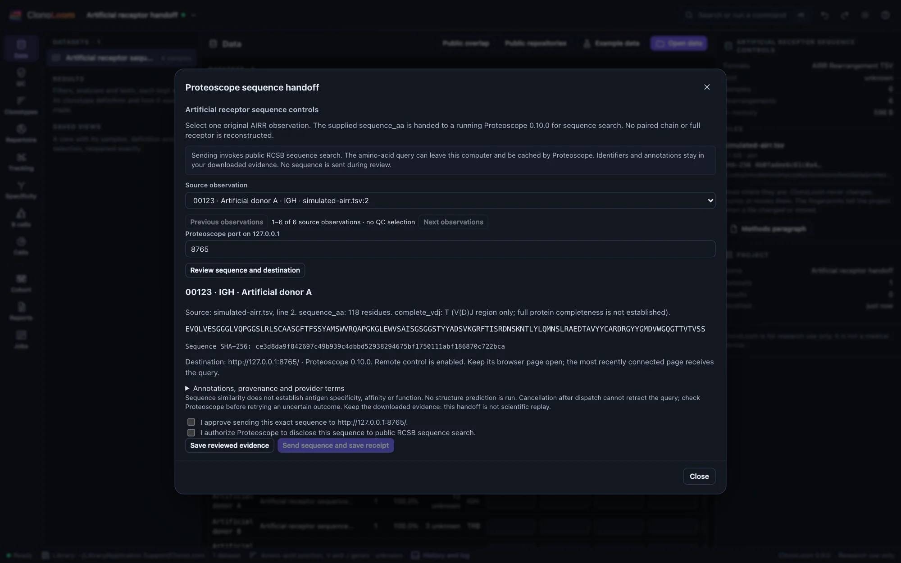
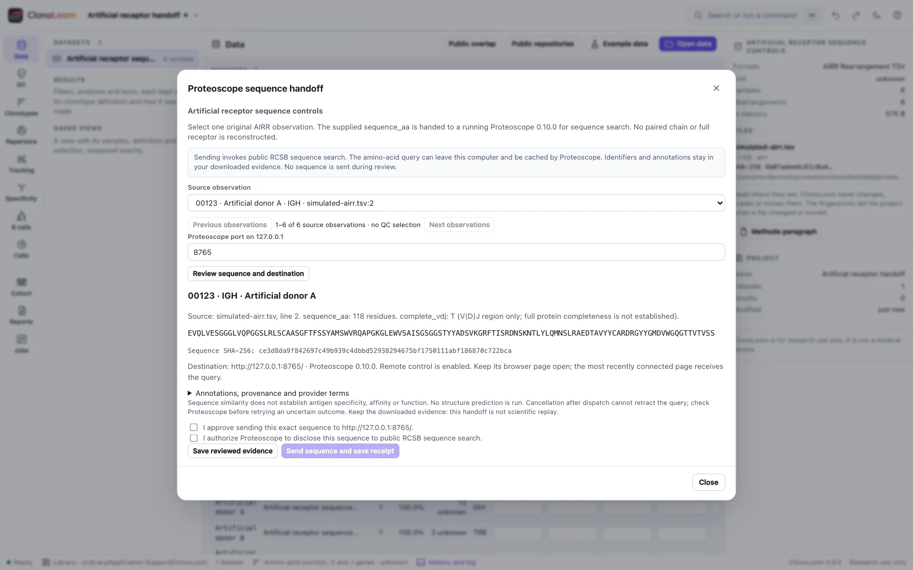
Sending invokes public RCSB sequence search and requires separate approval for that disclosure. Only amino acids are sent; identifiers, annotations and source hashes stay in the downloaded evidence. Missing or unsupported sequences are refused without translation, trimming or junction substitution. Partial V(D)J evidence remains partial; sequence similarity does not establish receptor pairing, a predicted structure or binding specificity.
Keep the reviewed evidence and receipt. A command acknowledgment is not a scientific result, and cancellation after dispatch cannot retract a query. Read the supported sequence contract, permissions, limits and receiver validation.
CytoWeave phenotype links · ClonoLoom 0.9.0
Choose Data → CytoWeave phenotype links to review one index-sort wells CSV against one explicitly selected receptor sample. Supply an experimental well,cell_id mapping and an acquisition/compensation declaration. Repeated wells, events or cell targets are refused; a barcode in another sample never fills a missing target.
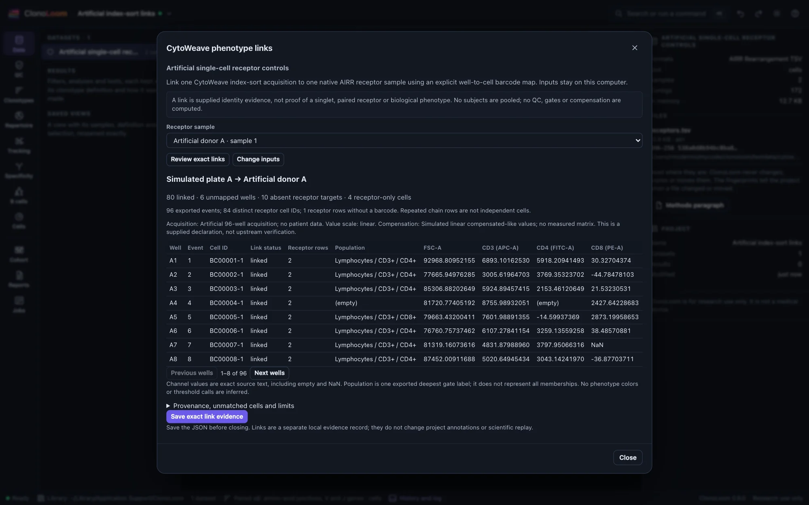
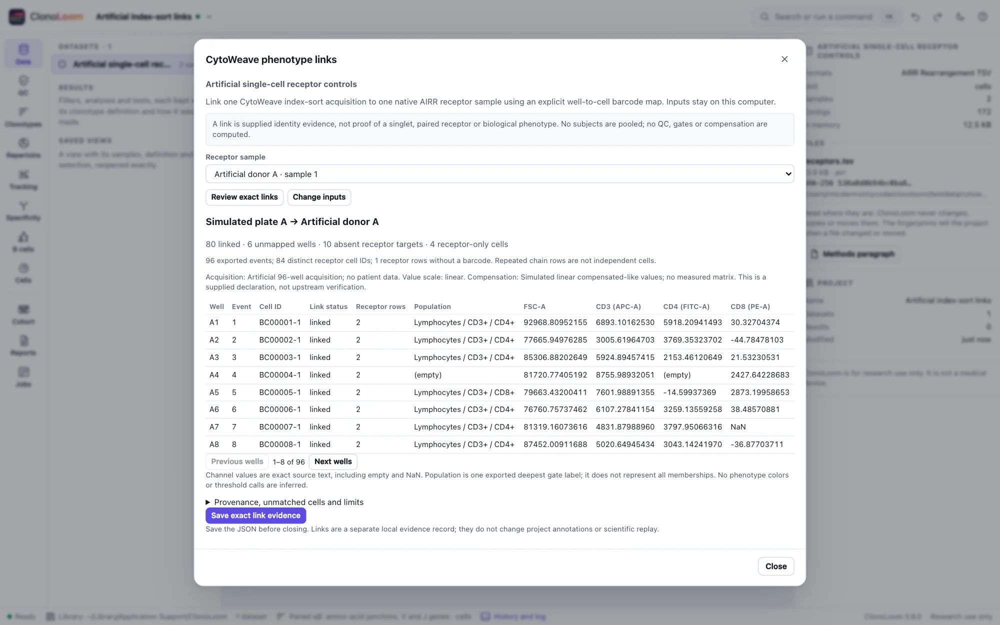
Channel values remain exact text, including negative values and missing tokens. The original CSV, mapping, provenance declaration and source hashes travel in a separate downloaded JSON record. The declaration is supplied context, not verification of compensation or gates. Links do not change project annotations or scientific replay. Read the supported format, declaration template, scientific limits and actual sibling validation.
Open your data
Open data shows the folders of this computer: choose the files, a Cell Ranger output folder, or a folder holding a cohort's files. What you choose together opens as one dataset: a cohort's exports, say, or a run's T cells. You can also name them on the command line. ClonoLoom reads each file where it is and never changes, copies or moves it; files dropped on the window are copied into the library instead, since a browser does not say where a dropped file lies.
Each file is fingerprinted by its SHA-256 as it is read. If a file later moves, Locate the files finds it again by its fingerprint near where it was, or lets you choose it and checks it. If a file's contents change, the project says so instead of reading other data under the same name. Tables read once are kept in a cache, so that a cohort of a hundred samples reopens in about a tenth of a second.
Inspect supplied repertoire metadata
ClonoLoom 0.9.0. Inspect original repertoire metadata without converting scientific values through browser numbers.
Open AIRR Repertoire JSON alongside its tables, then choose Data → Inspect AIRR metadata. The table shows record identities, matching coverage and whether each match used an explicit repertoire_id or a legacy sample name. An unmatched explicit ID never falls back to a name. Unmatched metadata is retained.
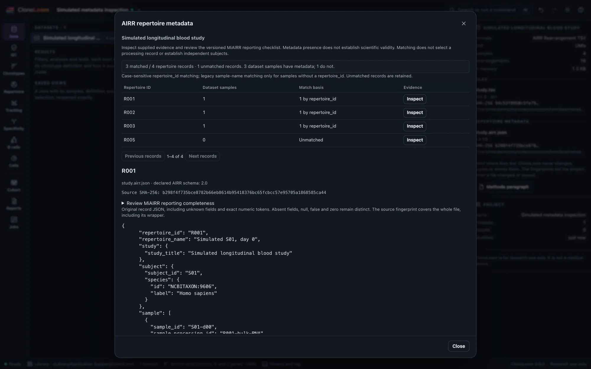
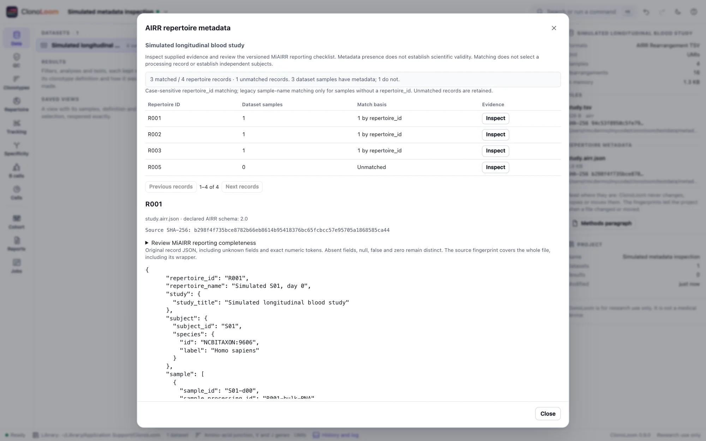
Inspect shows original JSON text with exact numeric tokens, unknown fields, null, false and zero preserved. The declared schema version and source SHA-256 identify the supplied evidence. Summary annotations may combine values from several processing records; inspect the original objects before interpreting them.
This is not a MiAIRR completeness check or full AIRR schema/ontology validation. The reader refuses ambiguous duplicate keys/IDs and malformed Unicode. Imports are bounded at 64 MiB of combined decoded metadata and 100,000 records; individual previews over 4 MiB are refused without truncating imported evidence. A separate versioned MiAIRR reporting review is described below; AIRR object inspection is described below. See the AIRR Repertoire standard and full format limits.
AIRR YAML metadata
ClonoLoom 0.9.0. Open .yaml, .yml, or their gzip forms alongside the tables. The bounded YAML 1.2 reader preserves exact decimal values and keeps quoted strings, null, false and zero distinct. The inspector separates decoded record JSON from the original YAML document and its source fingerprint.
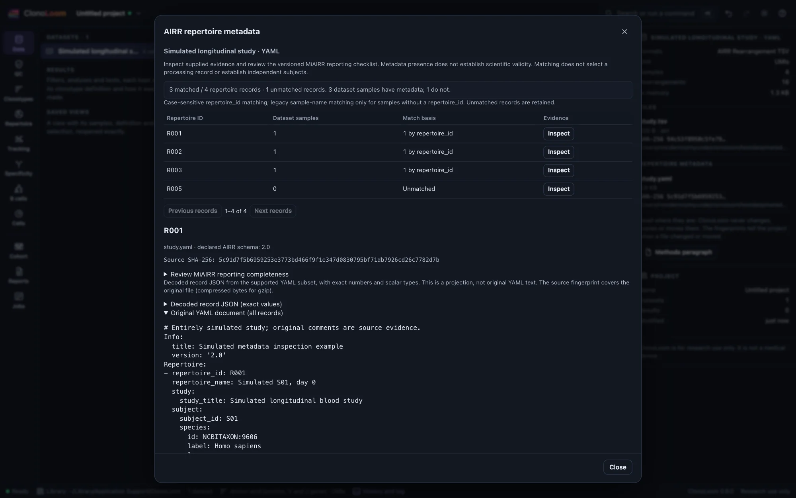
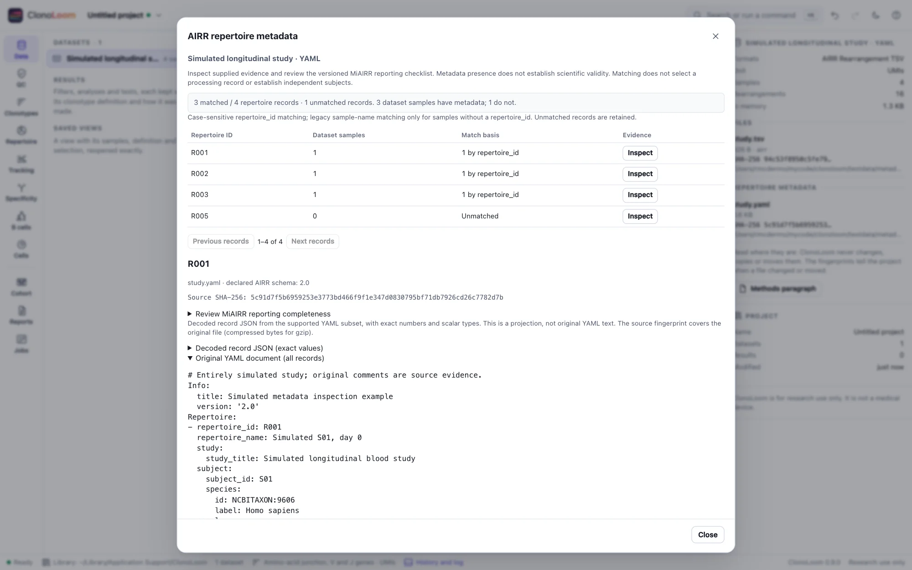
Supported syntax includes block mappings/sequences, quoted/plain scalars, literal text blocks and JSON-form inline collections. Tags, anchors/aliases, merge keys, directives, multiple documents, folded blocks and ambiguous numeric spellings are refused. Quote digit-leading text identifiers and dates. Consult the complete supported-syntax and limits guide before importing other YAML; exporting JSON is the fallback. This does not establish MiAIRR completeness or experimental validity.
Review MiAIRR reporting completeness
ClonoLoom 0.9.0. After inspecting a record, expand Review MiAIRR reporting completeness. Checklist clonoloom-miairr-2.0-v1 covers 82 Repertoire metadata fields in MiAIRR sets 1–5 for declared AIRR schema 2.0/2.0.0. Other or absent declarations are explicitly not assessed; do not just relabel older metadata.
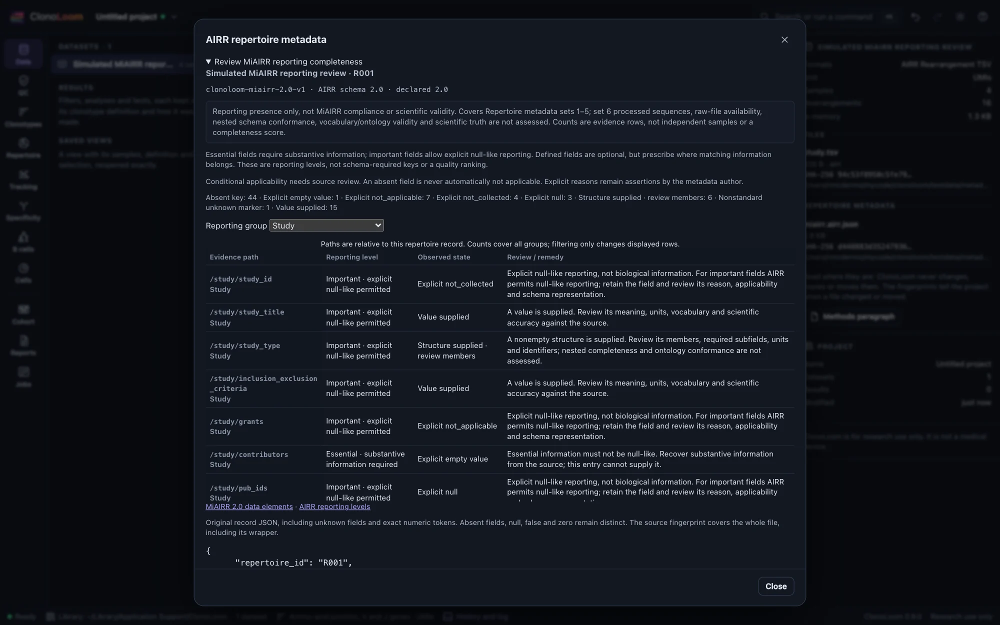
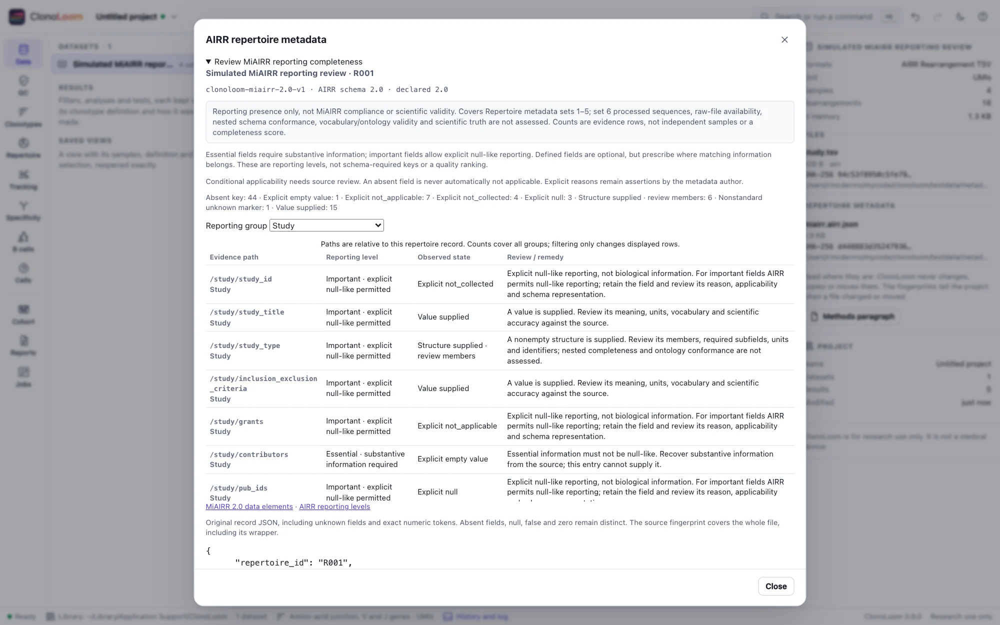
Essential fields require substantive information. Important fields permit explicit null-like reporting. Defined fields are optional, but prescribe where matching information belongs. These AIRR levels differ from schema-required keys. Absent keys, null, empty values, explicit missingness reasons and supplied values remain distinct; false and zero are not missing.
Each sample, PCR target, diagnosis and processing entry keeps its own evidence path. The group filter changes displayed rows only; counts cover all evidence rows, including parent scopes whose children could not be assessed. Conditional applicability requires source review, and nothing is automatically declared not applicable.
No compliance certificate or quality score. Set 6 processed-sequence reporting, raw-file/accession verification, nested schema validation, ontology conformance and scientific truth remain unassessed. A supplied value does not establish accurate annotation, independent subjects or a valid scientific conclusion. The checklist refuses more than 2,000 evidence rows without returning partial counts. See the complete contract and validation guide and AIRR reporting-level standard.
Inspect imported AIRR objects
ClonoLoom 0.9.0. Open AIRR 2.0 Data Files containing Clone, Cell, Receptor and supporting Node arrays alongside your rearrangement tables. JSON and the documented YAML subset are supported, including gzip. Choose Data → Inspect AIRR objects to review the original evidence and explicit links.
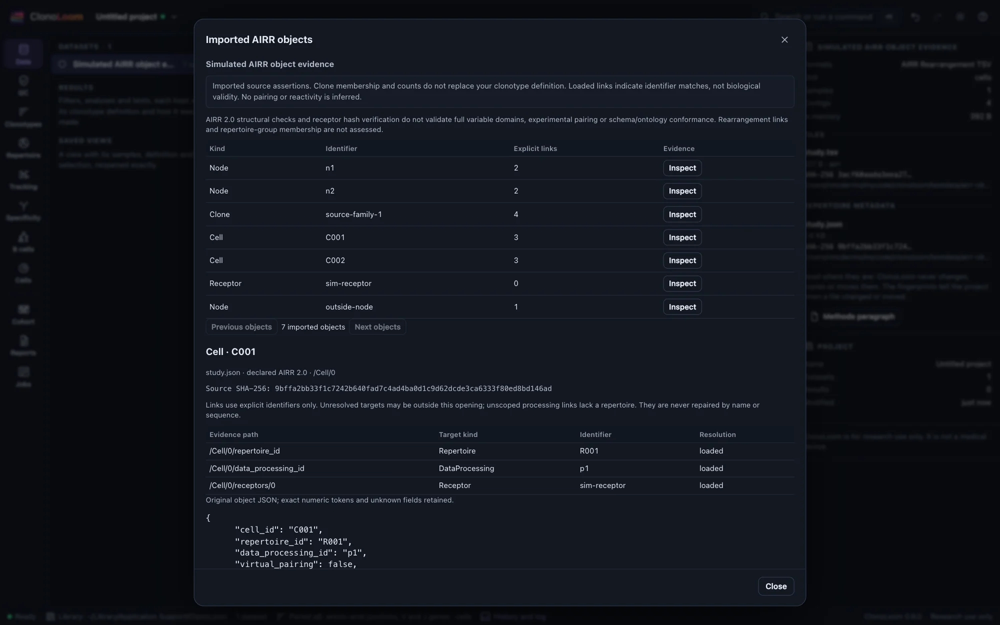
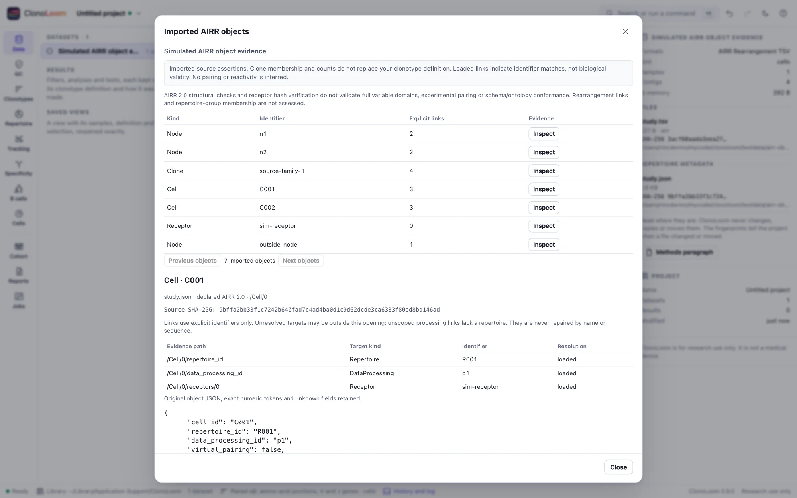
Loaded references indicate exact identifier matches. Missing targets stay unresolved; a processing reference without a repertoire is unscoped. Rearrangement references and repertoire-group membership are not assessed. No pairing, analysis counts or processing choice is inferred.
The reader rejects ambiguous IDs, malformed link cardinality, contradictory local repertoire links and incorrect receptor hashes. Hash consistency does not prove full variable domains, biological pairing or antigen specificity. See the object import contract for version requirements, limits and independent validation.
Browse public repository metadata
ClonoLoom 0.9.0. Choose Data → Public repositories to browse the pinned approved ADC registry. Enter species, locus, study or repertoire IDs, review the endpoint and exact query, then choose Send metadata query. Only those filters are sent; local data are never consulted. Opening the dialog makes no repository request.
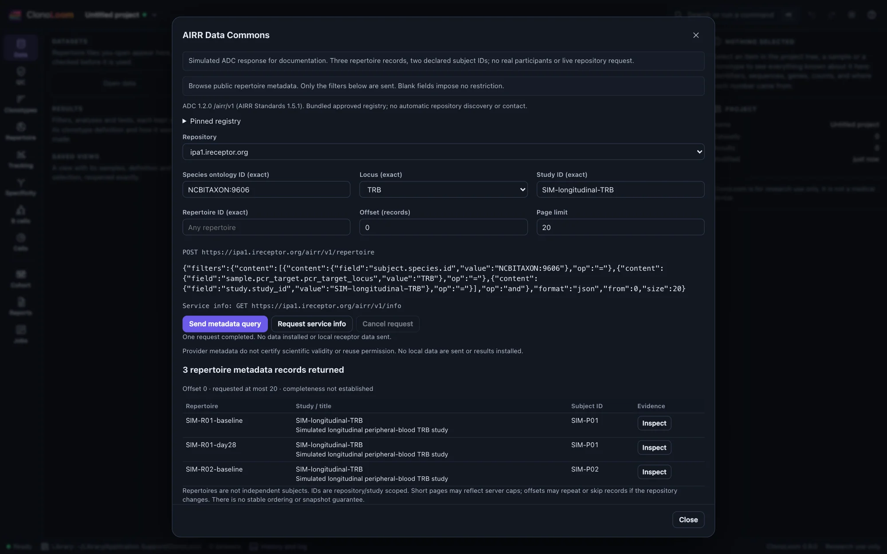
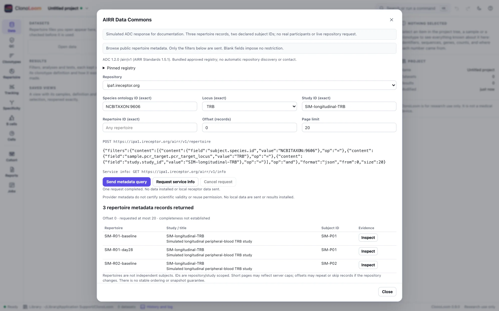
Requests are bounded to 100 records and 8 MiB, with a 45-second limit. Prepare next page makes a local preview; sending it requires another explicit click. Short pages do not establish complete cohorts, and repository changes may repeat or skip records between requests. Cancel or close the dialog to stop the local request. --offline disables outbound queries while keeping the bundled registry available.
Inspect original JSON, exact numbers, response fingerprints and retrieval times. Metadata do not certify scientific validity, MiAIRR completeness or reuse permission. Downloads and public-cohort comparisons are separate workflows; remote queries are not exact scientific replay. See the pinned v1 contract, supported filters and evidence limits.
Download reviewed source evidence
ClonoLoom 0.9.0. Inspect a repertoire and choose Download this repertoire…. Select one exact processing ID, record the provider permission evidence and citation, review the request and size budget, and explicitly accept. Total source size is unknown. Original JSON pages and a completion manifest are saved in a new private library folder.
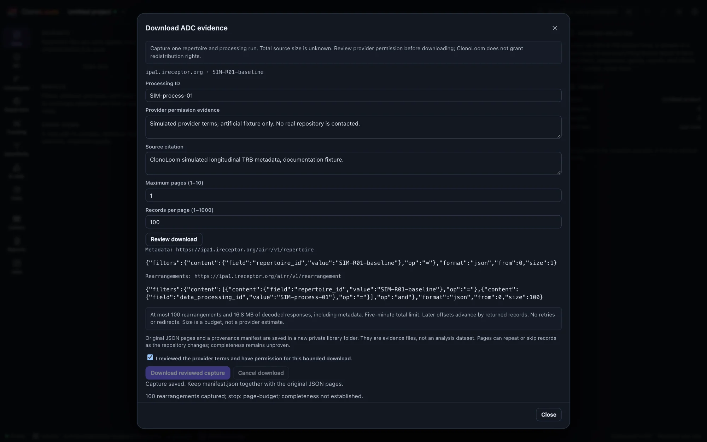
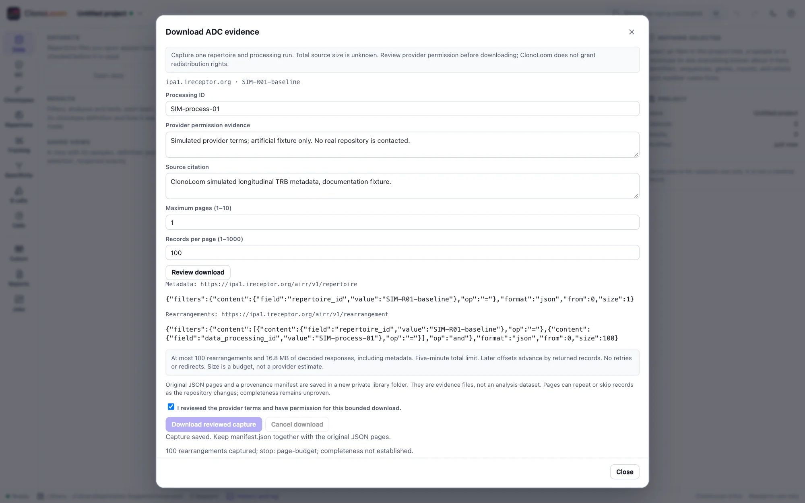
Duplicate IDs, conflicting scope and malformed pages abort the capture. Empty-page and page-budget stops both leave completeness unestablished. Source captures do not pool subjects, open an analysis dataset or certify exact remote replay. Read the download contract and cancellation limits.
Compare observed public-cohort evidence
ClonoLoom 0.9.0. Open a local dataset, then choose Data → Public overlap. Select one sample, one locus and 1–20 captured ADC folders. Review and accept the separate productive/locus/exact-junction presence contract. Comparison verifies the saved source bytes and scope, works offline and sends no local sequences to a repository.
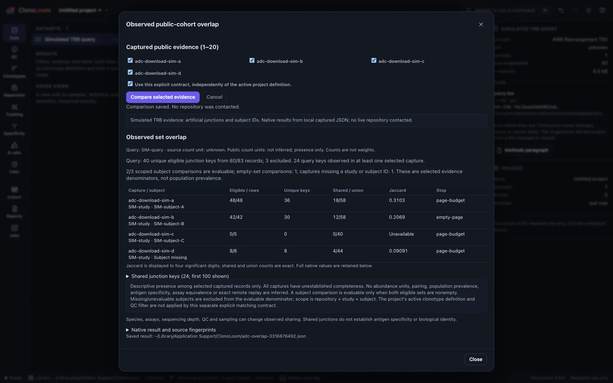
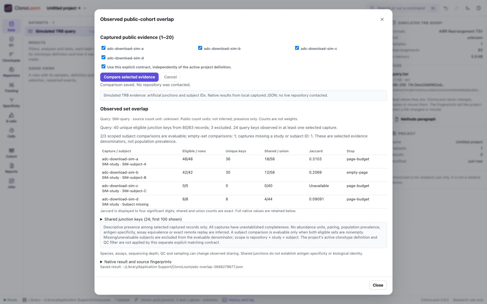
Inspect shared keys and their capture/subject support. Empty eligible sets stay unavailable, missing subject IDs stay outside the subject denominator, and multiple visits or processing runs for the same scoped subject cannot be silently pooled. Jaccard is displayed to four significant digits alongside exact counts; full native results and source fingerprints are saved separately.
All captures remain incomplete observations, including those ending with an empty page. Review species, assay and depth differences. Shared junctions do not establish antigen specificity, biological identity or population frequency. This contract does not apply the project's active clonotype definition, QC filter, abundance weighting or rarefaction. See the matching definition, subject scope, source units and validation limits.
Cell Ranger detailed JSON
ClonoLoom 0.9.0. Open supported detailed contig JSON, including gzip, and choose Data → Inspect native report. The nested layout is recognized without guessing a Cell Ranger version. Folder opening keeps CSV precedence and uses JSON when no contig CSV is available.
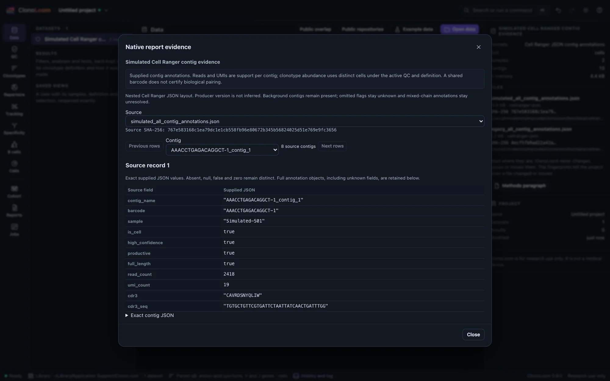
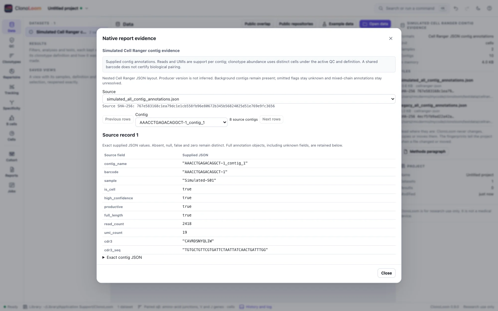
Background and multiple-chain contigs remain available before the active QC filter. Absent, null, false and zero stay distinct. Reads and UMIs support each contig; clonotype abundance counts distinct cells under the active definition. Missing full-length flags stay unknown, and mixed-chain annotations remain unresolved.
Original JSON retains unknown annotations and exact numeric tokens. Coordinates and flags are not reconstructed from vendor algorithms. See the layout contract, cross-format validation and scientific limits.
TRUST4 and VDJtools reports
ClonoLoom 0.9.0. Open supported TRUST4 repertoire reports and VDJtools TSV tables directly, including gzip. Saved column mappings retain precedence. Choose Data → Inspect native report to review captured source rows and unsupported annotations with their original numeric text.
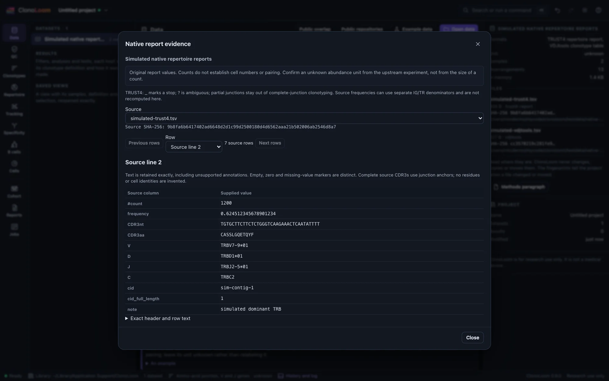
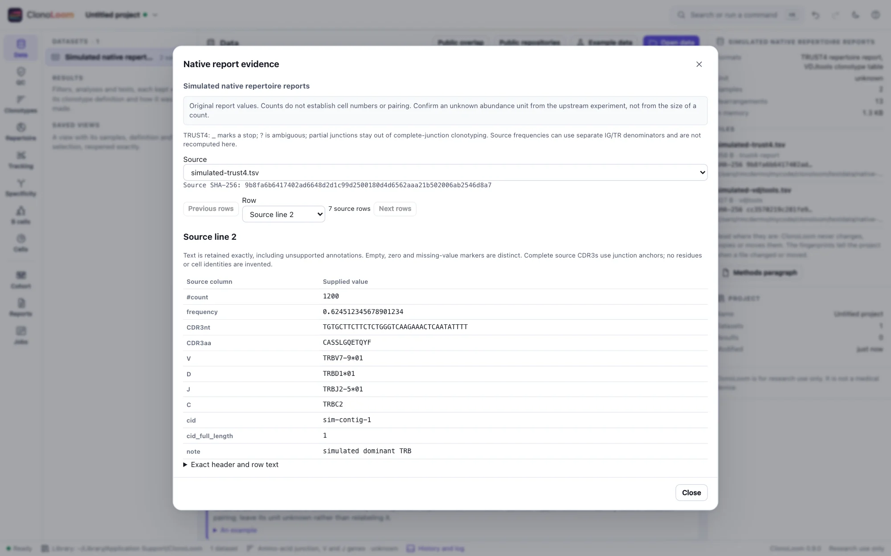
A modern count column does not establish reads, molecules or barcode support. Confirm reads or UMIs only from the upstream experiment. Source frequencies are not renormalized: TRUST4 can separate IG/TR denominators and VDJtools can retain frequencies from before subsetting.
TRUST4's underscore denotes a stop; VDJtools' denotes an incomplete codon. Partial TRUST4 junctions remain available as source evidence but cannot define complete-junction clonotypes. These checks do not establish transcript functionality, biological pairing or scientific validity. See the supported headers, count precision, evidence limits and independent validation.
Another tool's table
A CSV or TSV that no reader recognizes opens a dialog showing its first rows, with a column chosen for each field ClonoLoom uses: the junction (amino acids or nucleotides; one is needed), the V, D, J and C genes, the count, the sample, the locus, whether a rearrangement is productive, the cell, the clone and the sequence ID. ClonoLoom guesses them from the columns' names (VDJtools', MiXCR's, AIRR's and others'); change any that it guessed wrong.
- The count's unit is yours to say: reads, UMIs, templates or cells. A column called
countdoes not say what it counted, so ClonoLoom never guesses it. - Check reads the whole file through the mapping and reports, for each field, how many values are valid, examples of those that are not, and notes: how many junctions begin with a cysteine and end with a phenylalanine or tryptophan, how many counts are not whole numbers.
- Open checks, then opens the table through the mapping. Where no column says whether a rearrangement is productive, one whose junction is whole codons without a stop codon is.
The mapping is part of the dataset: the project keeps it, the dataset reopens through it, one file under two mappings is two datasets, and the methods paragraph states which column gave what. Scripts give it to open_data (remote control).
Check the data


The Data view shows each dataset of the project:
- The card: its format, rows, samples, whether it is single-cell or bulk, and its unit: cells, templates, reads or UMIs. When the files do not say whether reads or molecules were counted (an AIRR file with
duplicate_countalone), ClonoLoom does not guess: choose the unit, and until you do, results say "counts". - Validation: each finding with its severity, how many rows it concerns, examples (file, line, value) and what to do. A fatal finding stops analysis; a warning is shown with every result that uses the dataset; a note informs. Each has a stable code (
junction-anchors,locus-mismatch, …) you can cite. - Samples: rows, productive share, abundance and loci, and their annotation: subject, time point, tissue, reference, cell subset, condition, batch and HLA (Subjects and time points). Suggest from file names and Fill from metadata (AIRR Repertoire metadata, immunoSEQ's sample tags, an OAS or OTS unit's metadata, a tcrdist3 table's subjects and epitopes) propose values, and each keeps where it came from. The Repertoire view colors samples by condition and pairs them by subject.
- The inspector (right): the files with their SHA-256 fingerprints, what was read beside them (Cell Ranger's clonotypes and metrics), and the data's source and license.